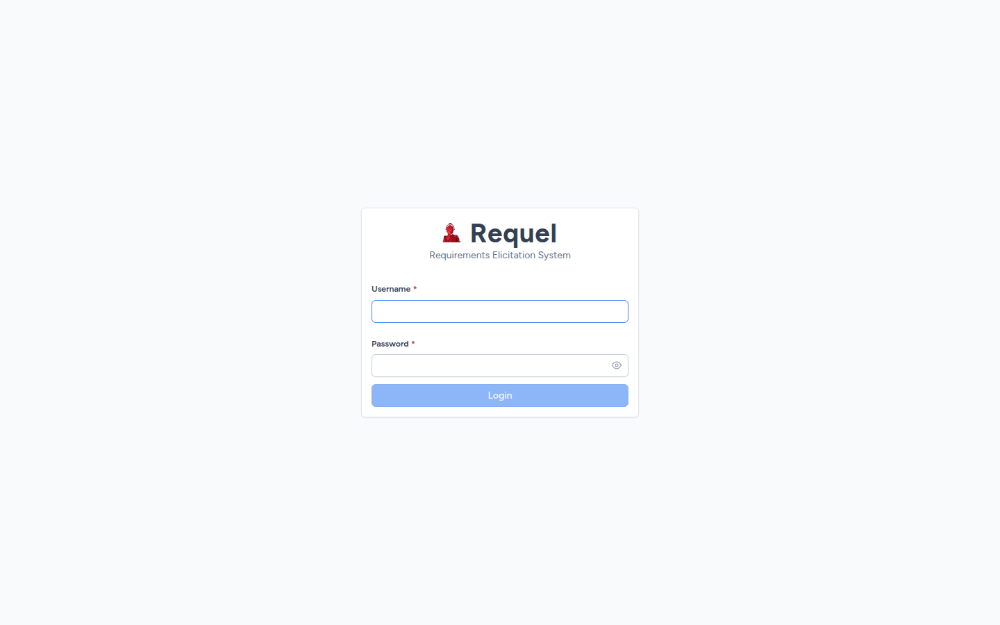
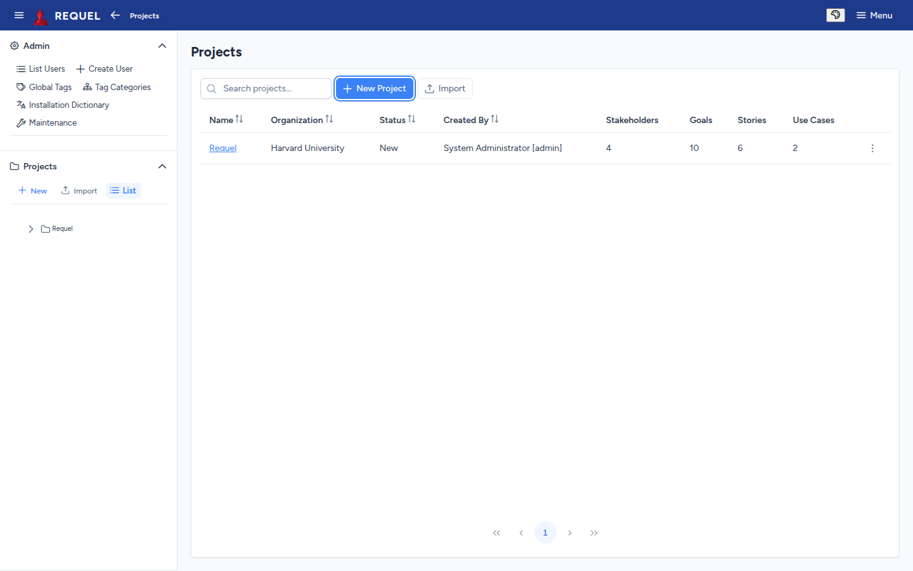
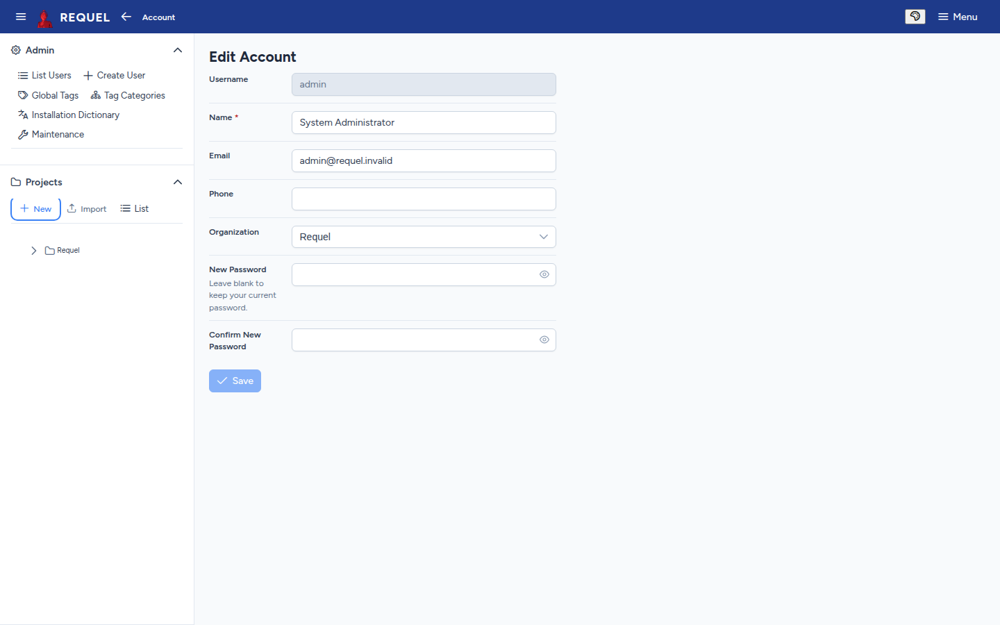
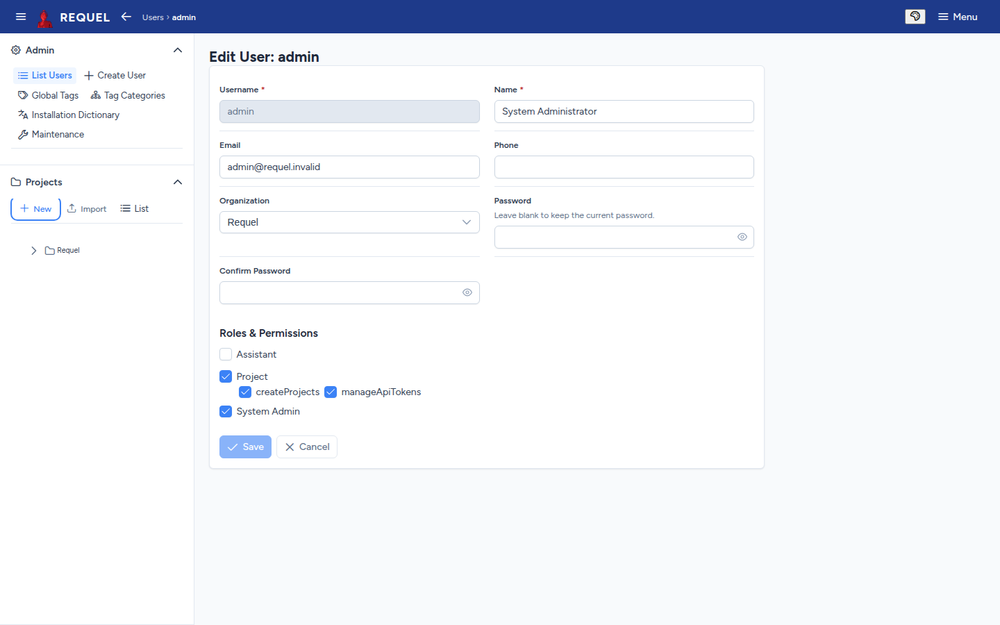

Getting started
Log in, learn the layout, and set up the people who will use Requel.
Log in
Open Requel in a browser (for a new install, http://localhost:8080/) and log in
with your username and password.

Find your way around

- Top bar. The menu button hides or shows the sidebar. The arrow goes back a page, and the breadcrumb shows where you are. The palette button sets the theme (light, dark or your system's) and the accent colour. Menu holds Settings, Edit Account and Logout.
- Sidebar, Projects. New, Import and List, then a tree of your recent projects. Open a project to jump to its stakeholders, goals, stories, actors, scenarios, use cases, glossary, dictionary, reports and open issues; each shows how many it has.
- Sidebar, Admin. Only system administrators see it: users, tags, the installation dictionary and maintenance.
Pages update by themselves when someone else, or an assistant, changes what you are looking at.
Change your password and details
Choose Menu → Edit Account. Change your name, email, phone or organization, or type a new password twice, then Save.

Settings
Menu → Settings sets how many projects the sidebar lists and hides projects nobody has touched for a while (three months by default). If you are allowed API tokens, they are managed here too (see API, MCP and CLI).
Add users (administrators)
Under Admin, Create User adds an account and List Users finds and edits existing ones. Give each user a username, name, email and password, and pick their roles:
| Role | What it allows |
|---|---|
| Project | Working on projects as a stakeholder. With createProjects
the user can also create and import projects; with manageApiTokens they can make
personal access tokens for scripts and AI clients. |
| System Admin | The Admin section: users, global tags, the installation dictionary and maintenance. |
| Assistant | For the automated assistants’ own accounts. People don’t need it. |

System administrators see every project. Other users see the projects they are stakeholders on, and what they can change in each is set on that project.
Other admin pages
- Global Tags and Tag Categories
- Tags every project can use, and categories that group them (for example
prioritywith the valuesmust,should,could). See Tags. - Installation Dictionary
- Words the spell checker accepts in every project, such as product names.
- Maintenance
- Repair project stakeholders gives a project’s creator back their stakeholder entry and full permissions if they lost them. It only adds what is missing, so it is safe to run again.